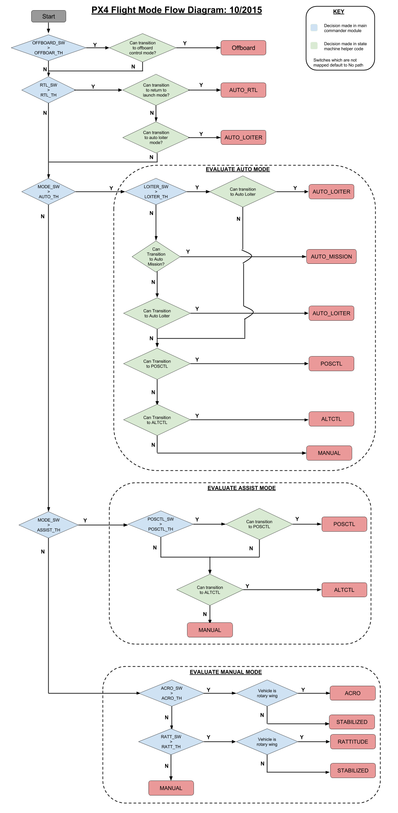

飞行模式
飞行模式 定义自动驾驶仪如何响应用户输入并控制飞机移动。 可以根据自动驾驶仪介入的程度将飞行模式粗略地分为 手动 （manual）, 辅助 （assisted） 和 自动 （auto） 三大模式。 飞行员使用遥控器上的开关或者 ground control station 在飞行模式之间进行切换。
需要注意的是并非所有类型的飞机都具备全部的飞行模式，同时部分模式在不同类型的飞机上的行为模式也不相同（见下文）。 最后，部分飞行模式仅在飞行前或者飞行中某些特定条件下才有意义（如 GPS锁定，空速传感器，飞机扰一个轴进行姿态感知）。 除非满足合适的条件，都则系统不会允许切换到这些模式下。
下面的各小节对所以的飞行模式进行了一个概述，随后给出了一张 飞行模式评估图 ，改图展示了 PX4 在何种条件下会切换至一个新的飞行模式。
More detailed user-facing flight mode documentation can be found in the PX4 User Guide.
飞行模式概要
手动飞行模式
“手动”飞行模式下用户可通过 RC 遥控器（或操纵杆）实现对飞机的直接控制。 飞机的运动总是跟锁着摇杆的运行，但响应的级别/类型会根据模式的不同而发生变化。 例如，有经验的飞手可以使用直接将摇杆位置传递给执行器的模式，而新手则通常选择一些对杆位突变反应不是很灵敏的飞行模式。
固定翼飞机/无人车/无人船：
- MANUAL： 飞行员的控制输入（来自 RC 控制器的原始用户输入）直接传递给输出混控器
- STABILIZED： 飞行员的俯仰和滚转输入将作为角度指令传递给自动驾驶仪，而偏航输入则由输出混控器直接传递给方向舵（手动控制）。 如果 RC 遥控器的滚转和俯仰摇杆处于居中位置，那么自动驾驶仪会将飞机的滚转角和俯仰角调整为零，因此可以在风的扰动下稳定飞机姿态（平飞）。 但是。在此模式下飞机的位置不受自驾仪的控制，因此飞机的位置可能会由于风的存在而发生漂移。 非零滚转角输入的情况下飞机会进行协调转弯以实现无侧滑（y方向的（侧向）加速度为零）。 在协调转弯时，方向舵用于控制侧滑角，任何手动的偏航输入都会叠加在该舵面上。
- ACRO： 飞行员的输入将作为滚转、俯仰和偏航 角速率 指令传递给自动驾驶仪 自动驾驶仪控制非机动角速度。 油门将直接传递到输出混控器上。
多旋翼：
MANUAL/STABILIZED： 飞行员的输入将作为滚转、俯仰 角度 指令和一个偏航 角速度 指令传递给自动驾驶仪， 油门将直接传递到输出混控器上。 自动驾驶仪控制着飞机的姿态角，这意味着当 RC 摇杆居中时自驾仪调整飞机的滚转和俯仰角为零，从而实现飞机姿态的改平。 但是。在此模式下飞机的位置不受自驾仪的控制，因此飞机的位置可能会由于风的存在而发生漂移。
对于多旋翼而言，Manual 和 Stabilized 模式是等同的。
ACRO： 飞行员的输入将作为滚转、俯仰和偏航 角速率 指令传递给自动驾驶仪 自动驾驶仪控制的是飞机的角速度, 而不是姿态角。 因此即便 RC 摇杆处于居中位置飞机也不会改平， 这一特性使得多旋翼可以完全翻转过来。 油门将直接传递到输出混控器上。
RATTITUDE： 飞行员的输入如超过了模式设定的阈值则将作为滚转、俯仰和偏航 角速率 指令传递自驾仪，例如当 RC 摇杆位置偏离中立位置特定距离后。 If not the inputs are passed as roll and pitch angle commands and a yaw rate command. 油门将直接传递到输出混控器上。 简单地说，当 RC 摇杆里中立位置较远的时候自驾仪相当于一个角速率控制器（与 ACRO 模式相似），而当 RC 摇杆居中时自驾仪相当于一个姿态角控制器（与 Stabilized 模式相似）。
辅助飞行模式
“辅助”飞行模式下也是用户进行控制，但该模式会提供一定程度的“自动”辅助 - 比如说在风的干扰下自动保持飞机的位置/指向。 辅助模式使得获取或恢复受控飞行变得更容易。
- ALTCTL： （高度控制）
- 固定翼飞机： 当滚转、俯仰和偏航（PRY）摇杆都处于居中位置（或处于特定死区范围内）时飞机将保持当前高度进行定直平飞。 飞机的 X 和 Y 方向的位置会跟着风发生漂移。
- 多旋翼： 滚转、俯仰和偏航输入与 Stabilised 模式相同。 油门输入表示以预设的最大速率爬升或下降， 油门有很大的死区。 油门居中表示保持当前高度。 自驾仪仅控制高度，所以飞机的 X、Y 位置会跟着风发生漂移。
- POSCTL： （位置控制）
- 固定翼飞机： 中立的输入（RC 摇杆居中）会令飞机保持平飞，且如果需要保持直线飞行的话飞控将会根据情况产生偏航指令以应对风的影响。
- 多旋翼： 滚转控制左右向速度，俯仰控制飞机相对地面的前后向速度。 偏航与 MANUAL 模式一样，控制的是偏航角速率。 油门与 ALTCTL 模式一样控制飞机的爬升/下降速率。 这意味着当滚动、俯仰和油门杆居中时，自动驾驶仪会在任意风的干扰下稳定地保持飞机的X、Y、Z 位置。
自动飞行模式
"自动" 模式下控制器几乎不需要或者完全不需要用户的输入 (例如执行起飞、降落和飞行任务)。
- AUTO_LOITER： （留待）
- 固定翼飞机： 飞机将在当前高度的当前位置附近盘旋（或者比当前高度稍高一点的高度，对“我看不见飞机了”的情况比较有用）。
- 多旋翼： 多旋翼将在当前位置和高度悬停/盘旋。
- AUTO_RTL： （返回并降落）
- 固定翼飞机： 飞机返回 home 位置并在 home 位置上空盘旋。
- 多旋翼： 多旋翼在当前高度直线返回 home 位置（如果当前高度大于 home 位置高度 + RTL_RETURN_ALT）或者从 RTL_RETURN_ALT 高度返回（如果 RTL_RETURN_ALT 比当前高度要高），然后无人机将自动降落。
- AUTO_MISSION： （任务）
飞行模式评估图
